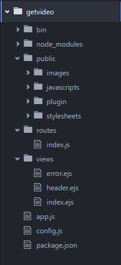
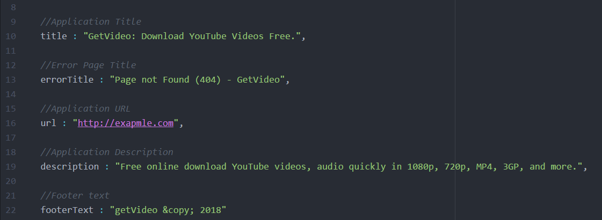

“Ytubedown” Documentation by “Arjun SN” v1.0.0
“Ytubedown - Wielnad Youtube Video Downloader”
Table of Contents
- Files Structure
- Customizing And Configuration
- Application Run Locally
A) Files Structure - top
- node_modules - All dependencies include this folder.
- public folder - Using all plugins, stylesheets, javascript files include this folder.
- config.js - Application configuration file. ( Application Name, Description and more.)
- views folder - All application template files.
- package.json - NodeJS application and packages details.

B) Customizing And Configuration - top
You can easily customize settings. First you open extract folder config.js file. Then you can change Application Title, Description, URL and more as you want.
Replace following values as you want with in inverted commas.

C) Application Run Locally - top
- First install NodeJS and NPM package manager.
- Extract application folder and go inside that folder using your command line tool. Then install All dependencies run following command.
> cd folder
> npm install
- Then run your application in web browser.
> npm start
- Then load http://localhost:3000/ in your browser to access the app.
Ytubedown - Wielnad Youtube Video Downloader ( v1.0.0 )
Arjun SN
Go To Table of Contents